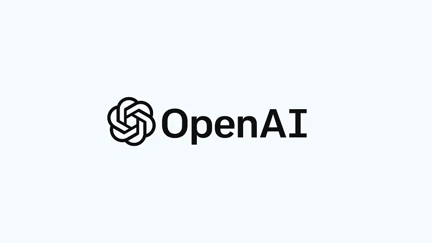

Empowering Web App Development
Moving with the latest trend everyone in the industry is trying to keep up-to-date with the advanced technologies. Modern technology known as OpenAI is revolutionizing the field of web app development. The term "OpenAI" describes the use of open and available developer's artificial intelligence algorithms and models. This technology can be used to increase user engagement, enhance the usability of web apps, and improve user experience.
A web app can impact your business in many ways. If it is managed very well, it will bring great benefits, otherwise, it may affect your business. So, are you wondering how to optimize your web app in this fast-paced world? Then OpenAI comes to the fore as a solution.
As AI emerges as the most advanced and thriving technology, the application areas are not limited. AI is transforming the web app development company as it makes human tasks more efficient and snappy. It has the potential to significantly impact and revolutionize various aspects of web application development.
By embracing OpenAI in web app development, you can stay on the cutting edge of technology and thrive in the ever-evolving digital landscape by providing a more engaging, efficient, and personalized user experience.
Here we open a wide-angle view of the future of OpenAI in web app development. Together, let's step into the future of the web with the unparalleled capabilities of OpenAI.

What is OpenAI in a Web App?
OpenAI, the most adaptable and refined artificial intelligence medium, has made thunder in the web and mobile app development industry. The platform boasts a range of abilities that are admiringly appropriate to this industry. These artificial intelligence platforms aspire to simplify the workflows of web app developers. With AI capable of making duplicative tasks a breeze, developers can use its power to free up their time and focus on more complicated tasks while speeding up the whole procedure. Also, OpenAI has brought great tools and technologies that can speed up the whole process of custom software development.
OpenAI can be applied in various industries such as e-commerce, travel booking, software development , manufacturing, and recruitment to improve web app development services. ChatGPT is one of the most widely used technologies today. With this innovative tool, developers can evade the procedure of manual coding. ChatGPT software development can do hefty tasks in a point of seconds. The next amazing technology of OpenAI is Codex, or CodeExchange, a platform that offers Natural Language Processing (NLP) APIs. App developers can utilize this tool for bug fixing, syntax assistance, optimal code generation, and more.
These powerful tools make the process faster, more efficient, and more accessible. These advances are not only transforming developers' code but also ushering in a new era of quality software development.
Benefits of Using OpenAI Web App Development
1. Boost user experience and satisfaction:
To deliver a tailored and consistent experience, OpenAI technologies use customer data, which can range from the customer's demographics to their behavior. By leveraging powerful AI technologies, it provides users with a personalized experience, which increases retention rates. OpenAI's natural language processing capabilities enable chatbots and virtual assistants to provide fast, accurate, and contextually relevant responses. As a result, there are fewer waiting periods and more seamless interactions—better user satisfaction and increased sales.
2. Including AI insights for the development of new products and services:
OpenAI can handle many tasks simultaneously. Unlike a human, OpenAI's API streamlines repetitive tasks like creating code snippets, freeing up considerable time and effort for developers. This powerful language model comes with natural language processing and promotes interaction between the developer and the AI. Hence, it is easier for web app developers to describe requirements and solve coding challenges. OpenAI can take developers to the next level with optimal code optimization, performance improvement, and other best practices.
3. Time to market and reduce operational costs by automating tedious tasks:
OpenAI's advanced technology provides reduced time and cost to market for building a web application. OpenAI's models and technologies allow developers to speed up and streamline the app development process.
OpenAI works on pre-trained language models, making it possible to automate repetitive tasks. Also, with this tool, you can create code snippets, increase productivity, reduce development time, and provide intelligent suggestions.
4. Uses cutting-edge AI algorithms to tailor user experience:
OpenAI's cutting-edge technology has immense potential to redefine app development and deliver new web experiences. OpenAI explores the power of natural language processing and machine learning to further enhance and assist developers in creating chatbots, virtual assistants, and personalized UI/UX.
The sophisticated algorithms it uses can generate dynamic content, tailor recommendations based on user preferences, and increase user engagement through interactive storytelling.
5. Streamlines Customer Support with AI-driven Chatbots:
By handling a large volume of customer queries, these chatbots not only reduce the workload of human support agents but also improve overall customer satisfaction. The integration of these AI-based chatbots into web-based support systems ensures a seamless user experience.
Apart from that OpenAI chatbots can be easily integrated into web-based customer support systems such as help centers or live chat widgets. This integration allows users to access support directly from the website without the need to switch between different platforms and channels.
6. Scales business operations with AI-driven tools:
OpenAI's API scales by automating your web-based operations, providing data-driven insights, and enabling efficient resource allocation. AI-powered web solutions support business growth by handling increased online traffic, optimizing website performance, and facilitating rapid adaptation to changing market conditions.
Advanced AI models automate various web-based processes such as website content creation, chatbot-driven customer support, and web data extraction. By automating these tasks, you can handle high website traffic and online activity as it grows, without requiring significant increases in personnel or operating costs.
7. Identifies fraudulent actions with OpenAI:
OpenAI detects and prevents fraudulent activity by identifying suspicious patterns and providing real-time alerts. AI-based fraud detection can help your businesses protect your assets, maintain customer trust, and reduce fraud-related financial losses.
OpenAI-powered fraud detection AI models can adapt and learn from new data and evolving fraud strategies. This adaptation ensures you stay ahead of emerging fraud trends, protect user data, avoid security threats, and maintain strong defenses against fraudulent activities.
8. Delivers Customized AI Solutions for Niche Industries:
One of the highlight features of OpenAI in artificial intelligence is fraud detection it can adapt and learn from new data and evolving fraud strategies. This adaptation ensures you stay ahead of emerging fraud trends, protect user data, avoid security threats, and maintain strong defenses against fraudulent activities.
OpenAI models can process and analyze huge volumes of industry-specific data, providing valuable insights that can inform strategic decision-making. By understanding their industry's unique trends, patterns, and challenges, you can make more informed decisions about their web applications and online strategies.
9. Provides Multilingual Support for Global Expansion:
OpenAI models like GPT can automatically summarize website content, product reports, and user-generated scope into multiple languages. This translation ability allows businesses to cater to a better diverse audience, making their web applications more convenient and user-friendly to individuals from different language environments.
By delivering customer support in multiple languages, you can make a healthier relationship with their international customer base and provide a better satisfying user understanding and experience. Also, AI models can examine user behavior data from different languages and civilizations and supply insights into the priorities, needs, and expectations of various user bases. By understanding these cross-cultural distinctions, enterprises can tailor their web applications and marketing plans to better serve their international audiences.
10. Aids Human Resource Management and Talent Acquisition:
OpenAI models can be used to automate different parts of the hiring procedure like candidate sourcing, CV screening, and interview scheduling. By automating these duties, you can save time, decrease manual errors, and focus on evaluating and engaging the most potential candidates. OpenAI can examine candidate profiles, talents, and experiences to compare them with relevant job roles and rank them based on their experience. This matching and scale method can help enterprises determine the most appropriate candidates, shorten the time to hire, and enhance the overall quality of new hires.
Conclusion
OpenAI is a current jargon in the tech industry that has a great future in web app development.
OpenAI has many possibilities in web app development to provide a more customized interface. These benefits are transferable to many areas, and organizations can leverage these rewards into their web application development process in many places.
From improving customer experience to streamlining customer support, OpenAI can offer a list of benefits in web app development. These benefits can be applied across various industries, using them to bring new ideas and reap revenue benefits for the business.
In conclusion, it is worthwhile to note that despite OpenAI's immense capabilities, it is not the same as using it unethically. In this rapidly changing digital environment, it is also a crucial challenge for developers to constantly explore and educate themselves about the potential of OpenAI.
CO-Founder
Yokesh Sankar, Co-Founder and Chief Operating Officer of Sparkout Tech Solutions, leverages his expertise to drive innovation and operational excellence in the software industry. Passionate about empowering individuals with essential skills, he uses technology to streamline business processes and enhance efficiency. He advocates for AI and blockchain adoption, helping businesses integrate these technologies seamlessly into their operations. Staying ahead of AI trends, Yokesh explores industry applications and shares insights to foster growth and knowledge in the tech sector.